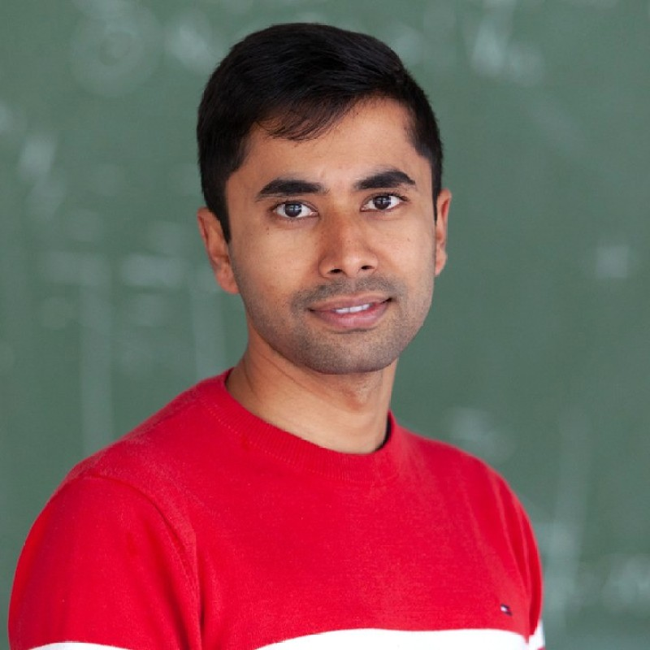

Spikewatch — Algorithmic Trading Platform
Multi-exchange back-testing & live-monitoring application with a strategy library, parameter sweeps, and Sharpe/drawdown reporting. Deployed as a MetaTrader 5 portfolio.

· MadridNischal Acharya, PhD — data scientist and machine-learning engineer with 7+ years across analysis, forecasting, modeling, and large-scale data pipelines spanning financial, scientific, and geospatial domains. I own problems end-to-end: from ingestion and feature engineering to modeling, deployment, validation, and stakeholder communication.
I'm a PhD-trained data scientist and Marie-Curie Fellow based in Madrid. My doctoral work pushed Bayesian modelling and statistical inference across terabyte-scale survey data, the same rigour I now bring to industry problems.
Most recently I built a production algorithmic-trading stack as a quantitative developer: back-testing engines, multi-exchange data feeds, strategy back-testing, and risk-management analytics across crypto and equities.
Whether the data is satellite imagery, financial ticks, or 100,000 multi-wavelength sources, I care about the same things: reproducibility, sound statistics, and a clear story that decision-makers can act on. Fluent in English and Spanish.
Multi-exchange back-testing & live-monitoring application with a strategy library, parameter sweeps, and Sharpe/drawdown reporting. Deployed as a MetaTrader 5 portfolio.
An open-source Python package for fitting and modeling, with a documented, modular architecture. Built for reproducible, scalable analysis workflows.
End-to-end Bayesian inference pipeline filtering 100k+ sources into a high-quality scientific sample. First-author publication in Astronomy & Astrophysics.
Co-developed and released a reusable module for probabilistic SED modelling, with version control, code review, and packaging best practices.
Supervised ML on EU Sentinel imagery for automated land-cover classification — a reproducible rasterio + scikit-learn pipeline.
I'm open to data science, quantitative research, and machine learning roles. The fastest way to reach me is email — I reply quickly.